Dokumentasi Presentasi Client
Link Akses: wms.luvion.my.id • Demo Login:
superadmin/password
EVERWIN WMS adalah sistem manajemen gudang (Warehouse Management System) berbasis web yang dirancang untuk mengelola seluruh alur operasional pergudangan — dari barang masuk, stok, hingga barang keluar & pengiriman — dalam satu platform terintegrasi.
Dibangun dengan teknologi modern untuk keandalan dan skala tinggi:
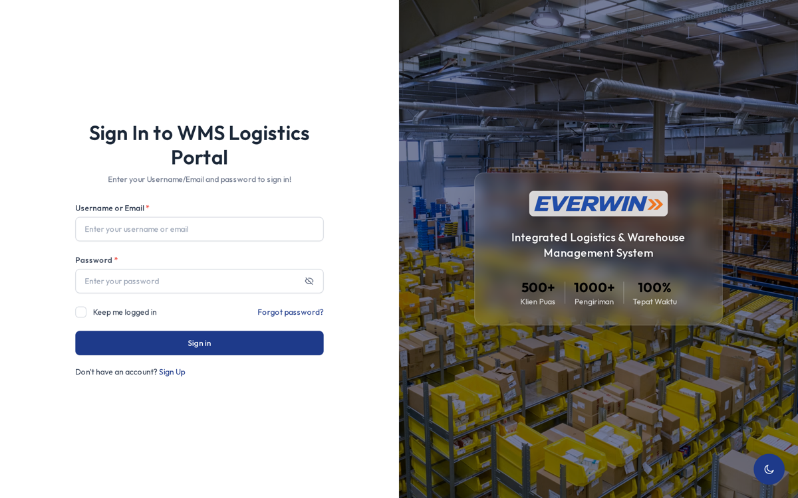
Pintu masuk aman dengan autentikasi berdasarkan peran (role-based). Sistem mendukung 4 peran: Super Admin, Warehouse Admin, Operator Field, dan Client (Forwarding).
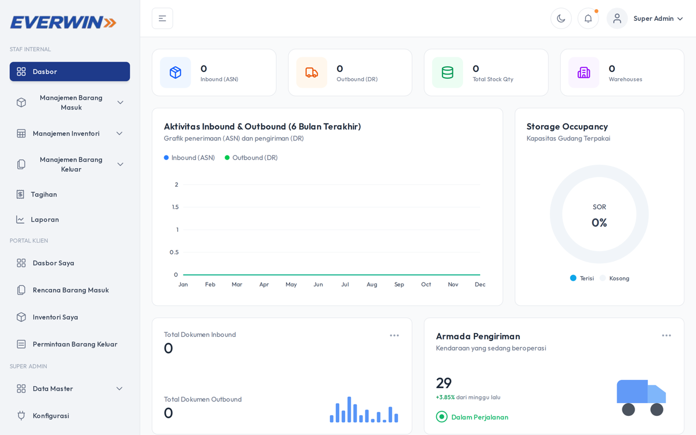
Ringkasan operasional gudang dalam satu layar:
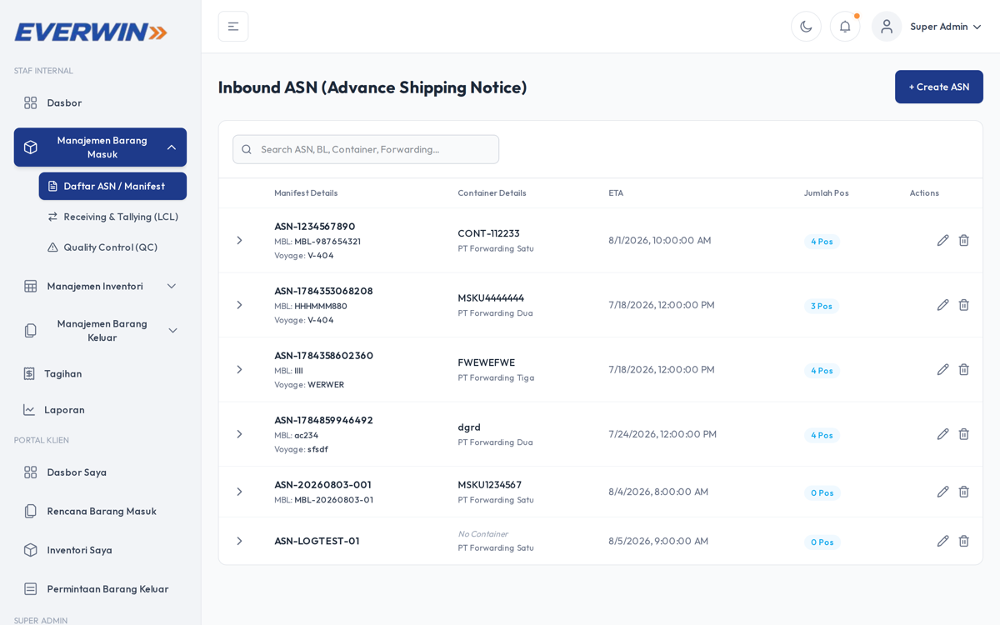
Manajemen Advance Shipping Notice — daftar barang yang direncanakan masuk, dengan:
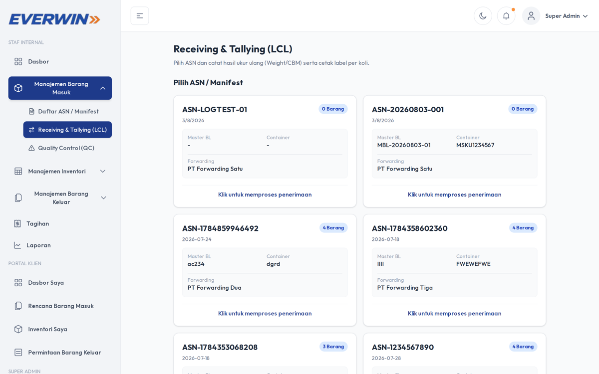
Proses penerimaan fisik barang di gudang dengan catatan detail per item.
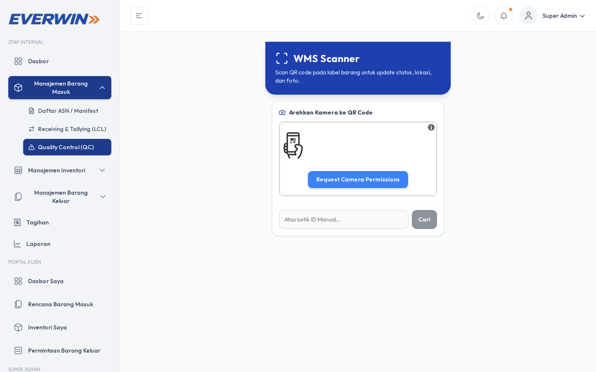
Pemeriksaan kualitas item sebelum disimpan (dengan dukungan foto bukti via SFTP).
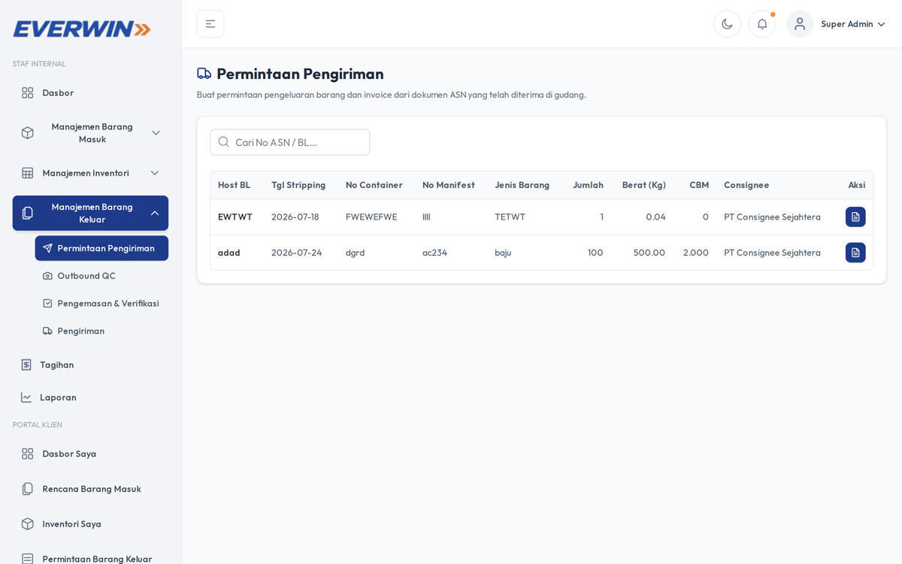
Client/Porter mengajukan permintaan barang keluar dengan detail item per permintaan.
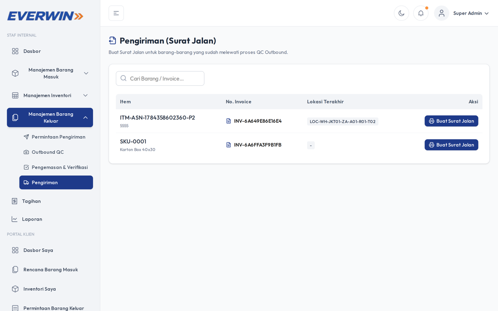
Proses dispatch barang keluar, dengan:
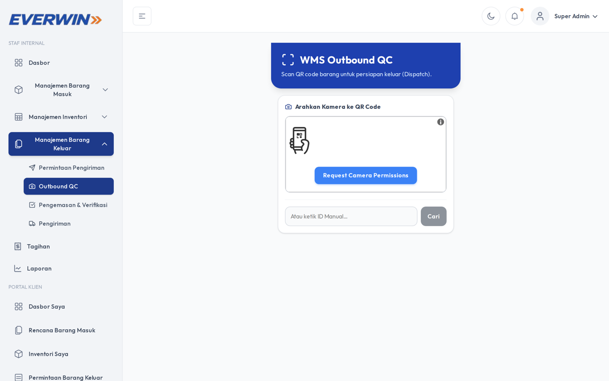
Pemeriksaan akhir barang yang akan dikirim keluar.
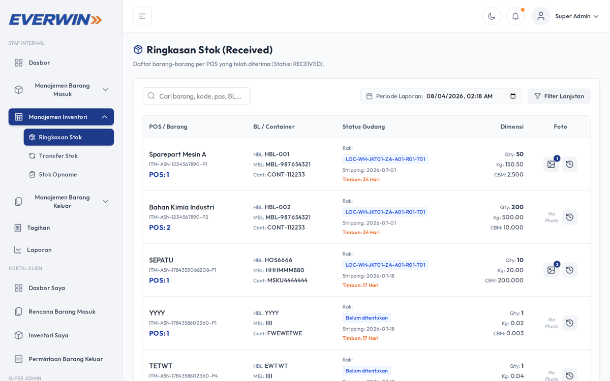
Pengelolaan stok lengkap:
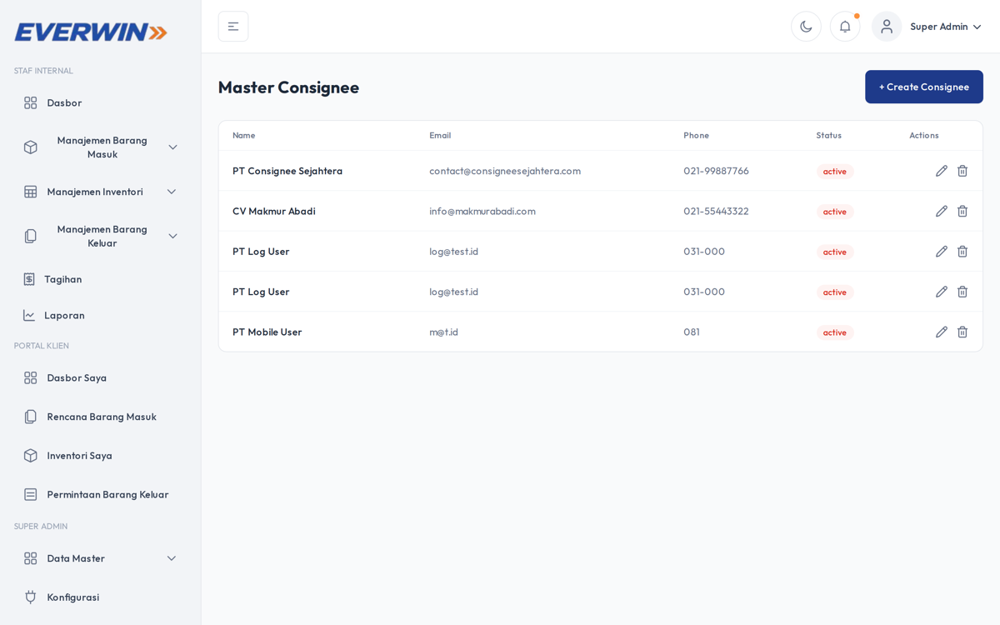
Kelola data consignee (penerima barang) dan forwarding untuk keperluan dokumen & invoice.
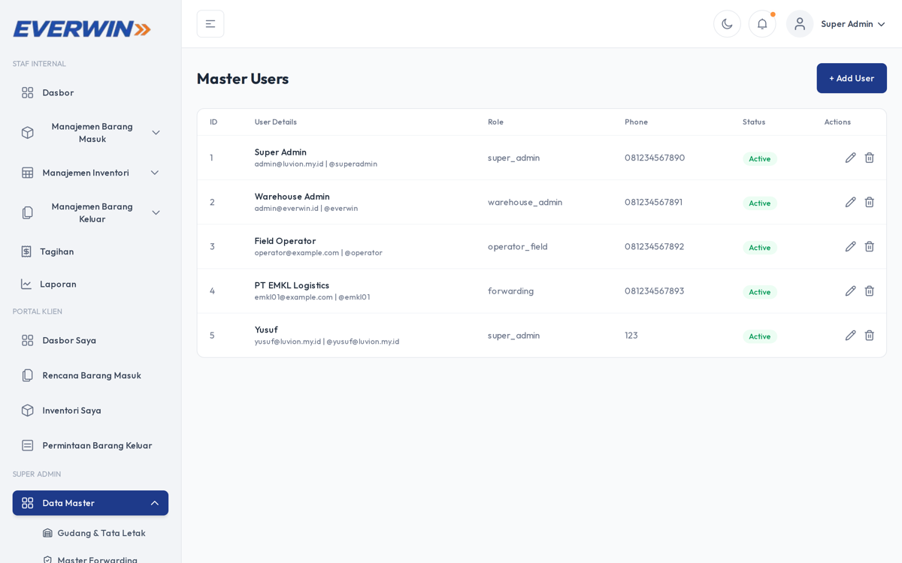
Kelola pengguna sistem dengan pembagian peran, status aktif, dan user logs (catatan aktivitas: login, IP, perangkat, browser).
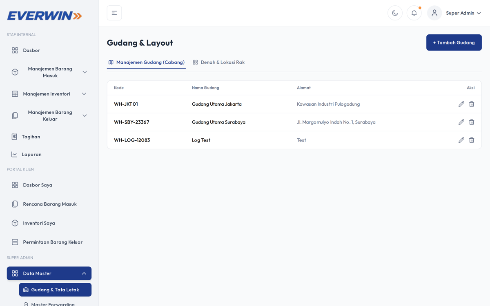
Atur data warehouse (gudang) dan lokasi penyimpanan dalam sistem.
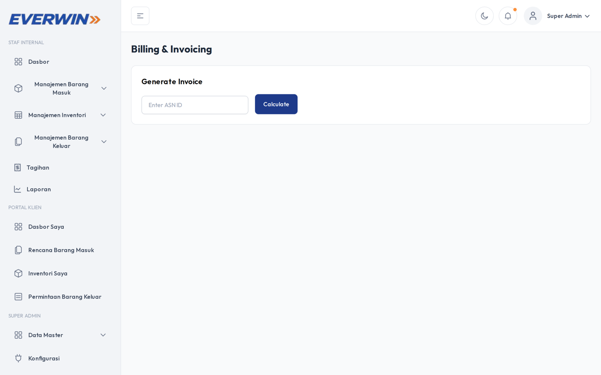
Perhitungan & pembuatan invoice otomatis berdasarkan ASN dengan kalkulasi tarif.
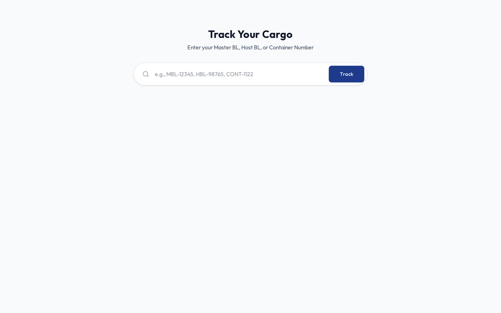
Portal interaktif bagi client untuk melacak status pengiriman kargo secara real-time via nomor identitas — tanpa perlu login.
| Modul | Fitur Utama |
|---|---|
| Dashboard | KPI real-time, grafik aktivitas, okupasi gudang, statistik armada |
| Inbound | ASN, Receiving, QC + foto, deviasi |
| Outbound | Delivery Request, Dispatch + Surat Jalan otomatis, QC |
| Inventori | Stok, transfer antar lokasi, stock opname, QR code |
| Master Data | Warehouse, lokasi, consignee, forwarding, tarif |
| Admin | Manajemen user & peran, log aktivitas, konfigurasi |
| Billing | Kalkulasi & pembuatan invoice otomatis |
| Tracking | Portal lacak publik real-time |
| Keamanan | Token auth (Sanctum), audit log per-user, foto bukti via SFTP |
| Komponen | Teknologi |
|---|---|
| Frontend | Next.js 16, React 19, TypeScript, Tailwind CSS |
| Backend | Laravel, REST API, Sanctum Auth |
| Basis Data | MySQL |
| Storage Foto | SFTP server |
| QR Code | Per item (identifikasi cepat) |
| Tracking | Endpoint publik tracking/cargo |
Dokumentasi disusun untuk kebutuhan presentasi client. Semua screenshot diambil secara live dari aplikasi berjalan di wms.luvion.my.id.